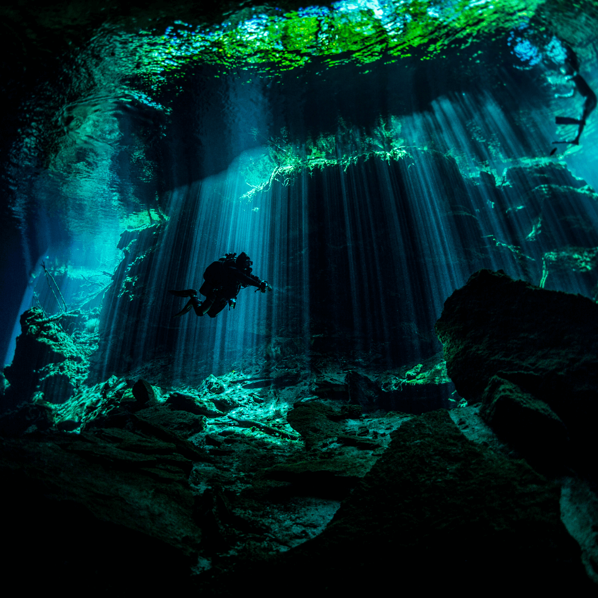
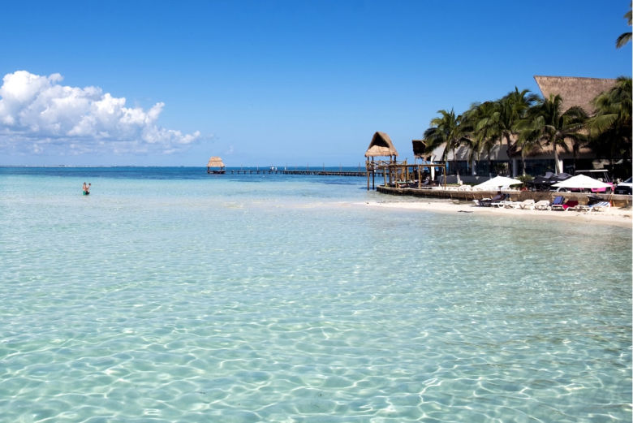

Underwater museum of contemporary art (MUSA) is made of 500 life-size sculptures between Cancun, Mexico and Isla Mujeres. If Scuba diving or snorkeling is not your thing, hop on a boat with a glass bottom and enjoy the masterpieces.

Isla Mujeres is a Mexican island in the Caribbean Sea, 13 kilometers off the coast from Cancún. It's a vacation destination known for beaches such as northern Playa Norte, resort hotels and for snorkeling and scuba diving on the surrounding coral reefs. At Punta Sur, the southern tip, there's a lighthouse, the remains of a Mayan temple and a sanctuary for sea turtles.